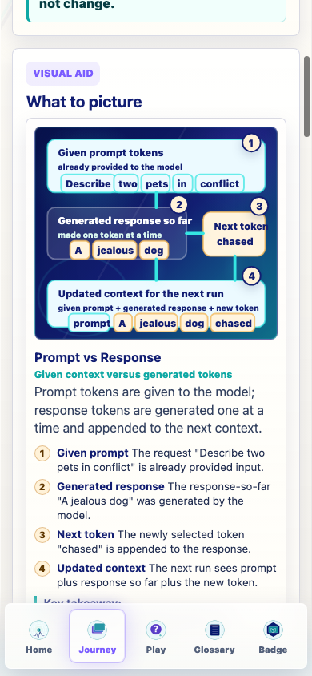
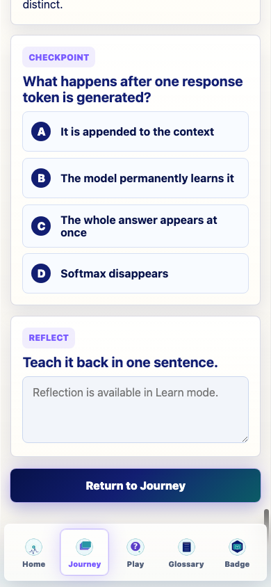
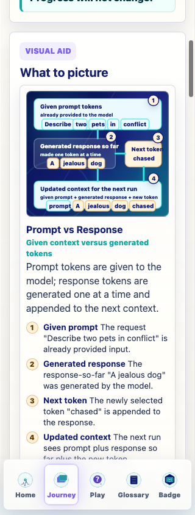
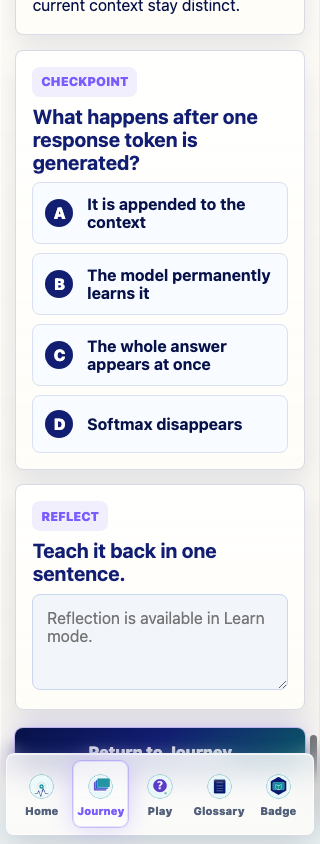

Prompt Life targeted repair
v0.25.4 Prompt vs Response And Checkpoint Paging
What Changed
- Repaired the coded
Prompt vs Response visual into a taller stacked diagram.
- Separated given prompt tokens, generated response-so-far, next token, and updated context.
- Added optional top-of-panel checkpoint paging for future multi-question lesson cards.
- Preserved the existing single-question checkpoint UI and shuffle key.
- Bumped the visible app version to
v0.25.4.
QA And Verification
npm run typecheck: passed.npm run build: passed with the existing Vite large-chunk warning.- Visual QA at 390px and 320px: no horizontal overflow, no clipped tokens observed.
- Current production content has no
quiz.questions arrays, so the multi-question pager awaits content-specific QA when first used.
Files Changed
src/components/VisualAids.tsxsrc/main.tsxsrc/styles/global.cssdocs/REVIEW_NOTES.mddocs/prompt-life-v0-25-4-prompt-vs-response-and-checkpoint-paging-report.md
Screenshots

Prompt vs Response visual at 390px
390x844; overflow: no
Existing checkpoint panel at 390px
390x844; overflow: no
Prompt vs Response visual at 320px
320x844; overflow: no
Existing checkpoint panel at 320px
320x844; overflow: no